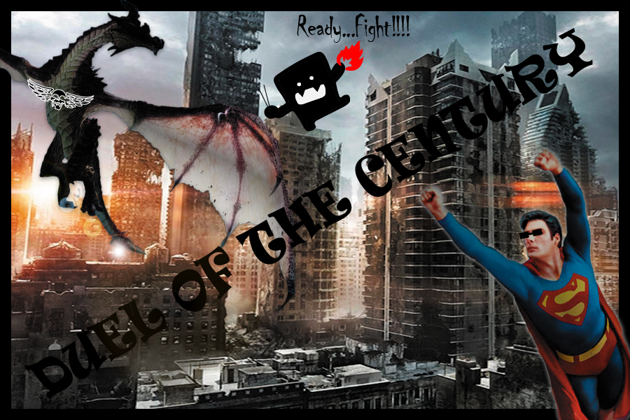
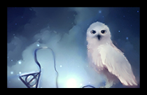

Home | Raster | Vector | Time Based Media | Indesign | ContactMy vector final project is based on my raster final project. But here I wanna say I am so sorry because I did not do it well even I did not pay attention on it. The request is I must draw up the new elements by myself. But I just found some little pictures and add them on my old work. That is a lesson to me that I should be patient and serious to my works.
